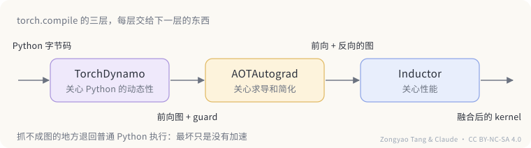

线索是：先看逐个执行的根本局限 → torch.compile 的两步走：抓图，生成 kernel → 抓到的图在什么条件下可以反复用，由 guard 决定 → 训练还需要反向的图，这是中间那一层的工作 → 编译器看不懂的地方会把图断开 → 最后说清它能解决什么、不能解决什么。融合为什么能变快，放在 4.2 细讲；这里讲的是整条流程。
第 2 部分 · PyTorch 执行栈2.5 torch.compile 的三层栈
这一单元回答torch.compile 是怎样把一段 Python 变成几个融合好的 kernel 的？
承接 2.3：逐个算子执行有固定开销，也看不到全局。编译器一次看到整张图，两个问题一起解决。
- 逐个算子执行看不到全局，所以做不了跨算子的优化
- torch.compile 两步走：先抓图，再生成 kernel
- guard：每份编译结果都带着一组“适用条件”
- AOTAutograd：把反向的图也提前拿到
- 图断点：编译器看不懂的地方，融合就断了
- 编译对付的是开销和带宽，不是算力
讲解
1逐个算子执行看不到全局，所以做不了跨算子的优化
PyTorch 默认是“即时执行”：Python 每调用一个算子，它就立刻执行这一个，然后把控制权交还给 Python。框架每次只看到当前这一个算子，不知道前面是什么、后面是什么。于是凡是需要同时看到几个算子才能做的优化，它都做不了。
即时执行的好处。 模型就是一段普通的 Python：可以用
if、for，可以在任何一行打断点、打印中间结果，报错时调用栈指向你自己写的那一行。这是 PyTorch 好用的主要原因。它看不到什么。 考虑
y = gelu(x + b)。即时执行时：- 先执行加法：读 x 和 b，把结果写进一个新分配的临时张量。
- 再执行 gelu：读那个临时张量，把结果写进 y。
加法执行时，框架不知道它的结果马上要被 gelu 用、而且只用这一次。所以它只能老老实实地把结果写回显存。如果能同时看到这两步，就可以生成一个 kernel：读 x 和 b，在寄存器里加完直接算 gelu，只写一次 y。中间结果根本不落地。这叫融合，4.2 细讲。
看到全局才能做的事还有：
- 省掉 Python 和 dispatcher 的开销：一整段计算只进一次 C++，而不是每个算子进一次。
- 提前规划显存：知道每个中间结果什么时候不再需要，可以复用它的空间。
- 消掉重复的计算，把能提前算好的常量算好。
以前的办法为什么不够好。 要看到全局，得先拿到“整段计算的图”。PyTorch 以前有两种办法，PyTorch 2 的论文把它们的问题讲得很清楚：
- 追踪（trace）：拿一个样例输入跑一遍，记下执行过的算子。问题是它只记下了这一次走过的路，Python 里的
if走的是哪个分支、循环了几次，都被固定死了，换个输入可能悄悄算错。 - 脚本化（script）：把 Python 代码当成一种受限的语言来编译。问题是很多正常的 Python 写法它不支持，用户得改写模型。
两者的共同点是：遇到处理不了的情况，要么出错，要么要求你改代码。
torch.compile 的思路。 不要求把整个模型都变成图。能抓成图的部分就抓下来编译；抓不了的地方，退回让普通的 Python 解释器执行，过了这一段再继续抓。最坏的情况只是没有加速，而不是出错。下一节讲它是怎么做到的。
打个比方像一个逐句翻译的同声传译：听一句译一句，快，灵活，但没法调整语序、合并重复的话。要译得精炼，得先看到整段。
所以即时执行换来的是灵活和好调试，代价是两样东西：每个算子都要付一次固定开销（2.3），以及相邻算子之间多余的显存读写。torch.compile 的目的就是在不放弃 Python 写法的前提下，把这两样拿回来。
出处PyTorch 2 论文 第 2 页 引言：即时执行的局限PyTorch 2 论文 第 3 页 §2 以往的图捕获方式Accelerate 第 3 章 编译模型- 那么，怎样在不改写模型的前提下，拿到“一整段计算”？torch.compile 的办法分两步。
2torch.compile 两步走：先抓图，再生成 kernel
TorchDynamo 在 Python 运行时截获字节码，把模型的计算抓成一张图；TorchInductor 再对整张图做融合和调度，在 GPU 上生成 Triton kernel。

三层各管一件事，之间传的是图 第一步：TorchDynamo 抓图。 它工作在一个很特别的位置：Python 解释器执行字节码之前。
Python 的源代码先被编译成字节码，解释器再一条一条执行字节码。CPython 提供了一个接口，允许在一个函数即将被执行时把它“截”下来。TorchDynamo 用这个接口接管了被编译的函数：
- 它自己模拟执行这个函数的字节码，一条一条地走。
- 遇到对张量的运算，不真的执行，而是往一张图里记一个节点。
- 遇到普通的 Python 操作（读属性、算术、调用别的 Python 函数），就照着模拟，并且跟进被调用的函数里继续走。
- 模拟过程中依赖过的事实，记成 guard（下一节）。
- 走完之后，生成一段新的字节码来替换原函数：它调用编译好的图，再把结果放回原来的变量里。
所以 TorchDynamo 是一个“字节码到字节码”的翻译器：输入是你写的函数，输出是一个做同样事情、但把其中的张量运算换成了“调用一段编译好的代码”的函数。你的
if、for、Python 数据结构，在模拟执行时都被走过了，留在图里的只有张量运算。这解决了以前两种办法的问题：它看到的是真实的控制流（所以不会像追踪那样悄悄固定分支，分支的条件进了 guard）；它不需要理解全部 Python（处理不了的地方可以退回，见后面的图断点）。
中间一步：AOTAutograd。 把反向的图也准备好，并把算子简化成基本算子。后面单独讲。
最后一步：Inductor 生成 kernel。 拿到只含基本算子的图之后：
- 决定哪些算子融合进同一个 kernel。逐元素的运算、归约，只要形状对得上就尽量合并。
- 为每个融合后的组生成代码。在 GPU 上生成的是 Triton 程序（4.3），再由 Triton 编译成 GPU 上的机器码；在 CPU 上生成的是 C++。
- 矩阵乘法、卷积这些不自己生成，直接调用现成的库。
- 规划中间结果的显存，生成一个把这些 kernel 按顺序调用起来的包装函数。
论文里解释了为什么选 Triton：他们观察到很多人手写高性能 kernel 时已经在用它，生成 Triton 代码比直接生成 CUDA 简单，性能又有保证。4.3 会讲 Triton 本身；到那时回头看 Inductor 生成的代码，就是一个个你能读懂的 Triton 函数。
打个比方像翻译一本书：先通读全书（抓图），再整体润色（融合、生成代码），而不是一句一句地现场口译。
所以编译后可以直接看到生成的 Triton 代码（例如设置 TORCH_LOGS=output_code），检查哪些算子被融合到了一起。
出处Accelerate 第 3 章 Dynamo 与后端Accelerate 第 3 章 TorchInductorPyTorch 2 论文 第 4 页 §3 TorchDynamo：字节码到字节码PyTorch 2 论文 第 6 页 §3.4 模拟执行字节码PyTorch 2 论文 第 8 页 §4 TorchInductor 与 Triton- 抓图是针对“这一次调用”做的。同一个函数下次再被调用时，这张图还能用吗？
3guard：每份编译结果都带着一组“适用条件”
编译时，TorchDynamo 根据当时的实际情况做了很多假设：输入张量的形状和类型是什么、某个 Python 变量的值是多少、走的是 if 的哪个分支。这些假设被记成一组检查条件，叫 guard。以后每次调用，先跑一遍检查：全部通过，直接用编译好的结果；有一条不通过，就按新的情况再编译一份。
为什么需要它。 Python 是动态的。同一个
forward函数，这次调用和下次调用执行的算子序列可能不同：def forward(self, x): if self.training: # 取决于一个属性 x = self.dropout(x) if x.shape[0] > 16: # 取决于输入的形状 ...TorchDynamo 抓图时，是照着当时的实际情况走的：
self.training是 True，就把 dropout 抓进图里；x.shape[0]是 32，就走了第二个if的里面。得到的图只对“这些条件都成立”的情况正确。guard 就是把这些条件记下来。 常见的几类：
- 输入张量的属性：数据类型、设备、维数、每一维的大小、是否需要求梯度。
- 用到的 Python 对象的值或类型：
self.training是 True；某个配置项等于 4；某个列表的长度是 3。 - 用到的模块和函数没有被换掉。
每次调用编译过的函数时，先执行这些检查。它们是很轻的比较操作，但条数多了也有开销。
检查不通过时。 按新的情况再抓一次图、再编译一份，和之前的并存。下次调用时，哪一份的 guard 能通过就用哪一份。一个函数积累的版本数有上限，超过之后这个函数就不再编译，退回普通执行。
最常见的触发原因：形状变了。 默认情况下，编译是针对具体的形状做的。输入的 batch 大小或序列长度一变，guard 就不通过。
- 最后一个不满的 batch：每轮触发一次。用
drop_last=True避免。 - 每个 batch 的序列长度都不同：每一步都可能触发。把长度补齐到固定的几档。
- 或者让编译器把某一维当成“可变的”来编译：它会生成对这一维的任意大小都适用的代码，guard 也相应放宽。编译器发现某一维在变化后，通常会自动这样做；论文里专门有一节讲它怎样对付动态形状。
其他触发原因。 训练和评估切换（
self.training变了，各编译一份，属于正常情况）；把一个 Python 数字当参数传进去，而它每次都不一样（每个不同的值一份）。怎么发现。 重新编译的典型现象是：训练速度隔一会儿就卡一下，或者前几百步都很慢。打开日志就能看到每次重新编译的原因（见这一单元最后的“排查”）。
打个比方像一份按具体条件批下来的许可证：上面写着“仅限这种车型、这条路线”。每次出车前核对一下，条件都符合就直接走；换了车型，就得重新申请一份。
所以编译过的函数并不是“编译一次，永远有效”。输入的形状、模型里的标志位一变，就可能触发重新编译。偶尔一次没关系，如果每一步都在重新编译，就比不编译还慢。
后面会用到 AOTAutograd：把反向的图也提前拿到出处PyTorch 2 论文 第 5 页 §3.1 guard 机制PyTorch 2 论文 第 11 页 §5 动态形状PyTorch 文档：torch.compile Troubleshooting- 抓图、检查条件都只涉及前向。训练时还有一半的计算在反向里。
4AOTAutograd：把反向的图也提前拿到
TorchDynamo 抓到的只是前向的图。训练还需要反向。中间这一层 AOTAutograd 的办法是：拿着前向的图，用假的输入让 autograd 引擎走一遍，把它会执行的反向节点记录下来，得到一张同时包含前向和反向的图，再交给后端去编译。
问题。 2.2 讲过，即时执行时反向的图是前向过程中一个节点一个节点动态记下来的，到
backward()时由引擎遍历。如果只把前向编译了，反向仍然这样走，那一半的计算就享受不到任何优化。做法。 AOT 是“提前”（ahead of time）的意思。拿到 TorchDynamo 给的前向图之后：
- 用“假张量”作为输入。假张量只有形状、类型这些元数据，没有真的数据，所以这一步不占显存、不做真的计算。
- 让 PyTorch 原有的 autograd 机制照常工作：前向时记账，然后调用反向。
- 把这个过程中执行的所有算子都记录下来，包括反向时每个节点里调用的算子。
结果是一张“联合图”：输入是原来的输入，输出是原来的输出加上梯度。再把它切成两半：前向的部分和反向的部分。切的时候要决定一件事：前向的哪些中间结果要交给反向。这正是 2.2 里“为了反向要保存中间结果”，只是现在由编译器统一安排。论文提到，它会优先保存那些重算起来贵的，而便宜的就让反向自己重算一遍，省下显存。
这样做的好处是不需要为编译重新实现一套求导规则：直接复用 2.2 讲的那张导数表和那台引擎，保证和即时执行的结果一致。
这一层顺便做的另外两件事。
- *分解。* PyTorch 有两千多个算子。让每个后端编译器都认识全部算子不现实。这一层把复杂的算子拆成一小组基本算子的组合（比如把某种归一化拆成减均值、除标准差等几步），后端只需要处理这一两百个基本算子。
- *去掉原地操作和副作用。* 把图变成“纯函数”的形式：每个算子只根据输入产生输出，不修改任何已有的张量。这样的图分析和变换起来简单得多。
三层的分工，现在可以完整地说了：
层 输入 输出 关心什么 TorchDynamo Python 字节码 前向的算子图 + guard Python 的动态性 AOTAutograd 前向图 前向 + 反向的图，只含基本算子 求导、简化 Inductor 上面的图 融合后的 kernel（GPU 上是 Triton 代码） 性能 每一层都可以单独替换。比如把最后一层换成别的后端编译器，前两层照用。
打个比方像排练：正式演出前，让演员不带观众、不开灯光走一遍台，导演把每个人的走位记下来，据此重新编排，正式演出时照着编排好的来。
所以编译之后，反向传播不再是引擎一个节点一个节点地现走，而是一段事先生成好的代码。反向里的算子也能融合，前向哪些中间结果需要保存，也可以在编译时决定。
承接 guard：每份编译结果都带着一组“适用条件”backward() 是对这张图的一次遍历：谁的上游都到齐了，就执行谁为了能反向，前向的中间结果要一直留着：训练显存的大头每个算子“怎么往回走”，写在一张表里，代码是照着它生成的出处PyTorch 2 论文 第 7 页 §3.9 AOTAutogradPyTorch 2 论文 第 8 页 联合图的切分与分解- TorchDynamo 模拟执行 Python 时，并不是什么都能处理。
5图断点：编译器看不懂的地方，融合就断了
数据相关的 Python 控制流、.item()、print、不支持的操作，都会让 Dynamo 在那里“断图”：前后分成两张图，中间回到普通的逐个执行。
发生了什么。 TorchDynamo 一条条模拟字节码，遇到它处理不了的操作时，不会报错，而是在这里把图切断：
- 把断点之前已经抓到的部分作为一张图，交去编译。
- 让普通的 Python 解释器执行那个处理不了的操作。
- 从断点之后重新开始抓，得到另一张图。
于是一个函数变成了“图 1 → 一小段普通 Python → 图 2”。程序的结果仍然是对的，这是这套设计的优点。
代价。
- 融合不能跨过断点。断点前最后一个算子和断点后第一个算子，本来也许可以合成一个 kernel，现在不行了。
- 每张图各有一组 guard 要检查，各要进出一次编译好的代码。图被切得很碎时，这些开销加起来可能把编译的收益吃掉。
- 断点处那段普通 Python 里如果有张量运算，它们是即时执行的，没有任何加速。
最常见的原因：需要知道张量里的具体数值。 编译器抓图时，张量只有形状，没有内容。任何“必须先算出结果才能继续”的操作都会断图：
if x.sum() > 0: # 分支取决于数据 ... print(loss.item()) # 要把数值取回 Python n = int(x.max()) # 用张量的值当 Python 整数注意对比：
if x.shape[0] > 16不会断图，因为形状在抓图时是已知的（它会变成一条 guard）。区别在于条件依赖的是“元数据”还是“数据”。其他原因。 调用了编译器不认识的外部库函数（比如拿张量去调 NumPy 或别的 C 扩展）；用了某些它还不支持的 Python 特性。
怎么处理。
- 先找出来（这一单元最后的“排查”）。只管热点路径上的。
- 记日志、打印这类操作，挪到被编译的函数外面，或者降低频率。
- 依赖数据的分支，如果两边都只是张量运算，改成不需要分支的写法，比如
torch.where(cond, a, b)：两边都算，按条件逐元素选择。 - 实在绕不开的，就让它断。一个模型里有一两个断点并不可怕，可怕的是它出现在最内层的循环里。
打个比方像高速公路上的收费站：每遇到一个，车流就得停下来，再重新加速。
所以想拿到 torch.compile 的收益，要找出并消掉热点路径上的 graph break（可以用 TORCH_LOGS=graph_breaks 查看）。
后面会用到 编译对付的是开销和带宽，不是算力出处Accelerate 第 3 章 编译日志PyTorch 2 论文 第 7 页 §3.8 图断点与续接函数- 最后要说清楚它的边界。torch.compile 不是免费的午餐，也不是对所有模型都有效。
6编译对付的是开销和带宽，不是算力
torch.compile 省掉的是两样：逐个算子执行的固定开销，和相邻算子之间多余的显存读写（通过融合）。它不会让一次大矩阵乘法变快，因为那已经是调用高度优化的库了。所以它对算子多而小的模型效果明显，对时间已经被几个大矩阵乘法占满的模型帮助有限。
能省的。
- *框架开销（等发令）。* 一整段计算变成少数几次 C++ 调用，Python、dispatcher、逐个分配输出这些每个算子都要付的成本大部分消失。对 2.3 讲的开销受限的模型，这一项收益最大。
- *显存读写（带宽）。* 逐元素的算子被融合成一个 kernel，中间结果不落地（4.2）。归一化、激活函数、残差相加这些带宽受限的部分因此变快。
- *显存占用。* 没有了那些临时的中间张量，峰值显存常常也会下降一些。
不能省的。 大的矩阵乘法、卷积。它们本来就是调用 cuBLAS、cuDNN 这样的库，库里的实现已经接近硬件极限（4.5），编译器不会去重写它们。如果 profiler 显示九成的 GPU 时间都在矩阵乘法上，编译带来的提升就只能在剩下那一成里找。
论文里的数字。 在一张 A100 上、对 180 多个真实模型，默认后端相对即时执行的几何平均加速是推理 2.27 倍、训练 1.41 倍。“几何平均”意味着各个模型差别很大：有的快好几倍，有的几乎没变。训练的加速比推理小，原因之一是训练时矩阵乘法和反向的占比更高。
代价。
- *编译时间。* 第一次调用要等几十秒到几分钟。短时间的实验可能得不偿失；长时间的训练可以忽略。
- *重新编译。* 上面讲过。形状不稳定的训练要先处理这个问题。
- *调试更难。* 编译后的代码不再逐行对应你的 Python。出了数值问题，先关掉编译确认即时执行是对的。
- *不是所有写法都支持。* 下一节的图断点。
几种模式。
torch.compile(model, mode=...)可以选：- 默认：编译时间和运行速度的折中。
reduce-overhead：额外用 CUDA Graph（3.6）把“启动 kernel”这一步的开销也压下去，适合小模型、小 batch；代价是多占一些显存，并且对形状变化更敏感。max-autotune：花更长的编译时间去搜索更快的配置。
怎样判断值不值得用。 按 0.2 的办法：先有基线，再打开编译，跳过编译和预热的那几步，量稳定状态的吞吐和峰值显存。同时看一眼日志里有没有图断点和重新编译。
排查：看编译器抓到了什么、在哪里断开、为什么重新编译
torch.compile 的行为可以通过日志开关看到。开关用环境变量
TORCH_LOGS设置，不需要改代码。下面的名字是 PyTorch 2.x 的，完整的列表见官方的 troubleshooting 文档。图在哪里断开了。
TORCH_LOGS=graph_breaks python train.py
每个图断点打印一条：断在哪个文件的哪一行，原因是什么（调用了不支持的函数、对张量的值做了判断……）。只需要关心热点路径上的：训练循环每一步都经过的那些。初始化时执行一次的代码里有断点，没有影响。
为什么又编译了一次。
TORCH_LOGS=recompiles python train.py
每次重新编译打印一条，说明是哪一条 guard 没通过，比如某个张量的某一维从 32 变成了 17。据此决定是固定形状、还是让那一维成为动态的。
guard 有哪些。
TORCH_LOGS=guards python train.py
生成的代码长什么样。
TORCH_LOGS=output_code python train.py
会打印 Inductor 生成的 Triton kernel。能看到哪些算子被融合进了同一个 kernel：kernel 的名字里通常带着它包含的那几个运算。4.2 和 4.3 学过之后再来看，会更有收获。
不运行、先整体看一眼。
import torch._dynamo explanation = torch._dynamo.explain(model)(example_input) print(explanation)
它报告这个函数被切成了几张图、有几个断点、各自的原因。理想情况是一张图、零个断点。
二分法。 怀疑编译导致了错误的结果或崩溃时，可以逐层关掉来定位：把后端换成一个什么都不做的（
torch.compile(model, backend="eager")），这时只有 TorchDynamo 在工作。问题还在，就出在抓图这一层；问题消失，就出在后面两层。打个比方像请一位效率顾问优化工厂：他能砍掉重复的手续、合并可以一起做的工序，但没法让机床本身转得更快。
所以用之前先想清楚自己的瓶颈是哪一类（0.1 的四种“等”）；用之后要量，而不是默认它有效。它还有自己的代价：第一次调用要等编译，调试也更难。
出处PyTorch 2 论文 第 2 页 摘要里的加速数字PyTorch 2 论文 第 8 页 §4 TorchInductorPyTorch 2 论文 第 13 页 实验：图捕获的开销与加速PyTorch 文档：torch.compile
串起来
逐个算子执行看不到全局。torch.compile 分三层：TorchDynamo 在 Python 字节码这一层把计算抓成图；AOTAutograd 提前生成反向的图；Inductor 把图融合并生成 kernel。每份编译结果带着一组 guard，条件不满足就重新编译。遇到看不懂的 Python，图会断开。编译省的是发令的开销和显存的读写，对已经被矩阵乘法占满的模型帮助有限。
考考自己
不看讲解，用自己的话讲一遍。
- PyTorch 的即时执行模式有什么好处和代价？哪些优化是它做不了的？
- TorchDynamo 是在哪一层抓取计算图的？它和 Inductor 各自负责什么？
- torch.compile 里的 guard 是什么？哪些情况会触发重新编译？怎样避免反复重新编译？
- AOTAutograd 在 torch.compile 的三层里做什么？它是怎样得到反向图的？
- 什么是图断点？它为什么会降低 torch.compile 的效果？哪些写法容易造成图断点？
- torch.compile 能优化哪几类瓶颈，不能优化哪一类？使用它有哪些代价？
术语
- TorchDynamo
- 抓取计算图的前端
- AOTAutograd
- 提前生成反向图的中间层
- TorchInductor
- 生成 kernel 的后端
- guard
- 守卫（编译结果的适用条件）
- graph break
- 图断点
- recompilation
- 重新编译